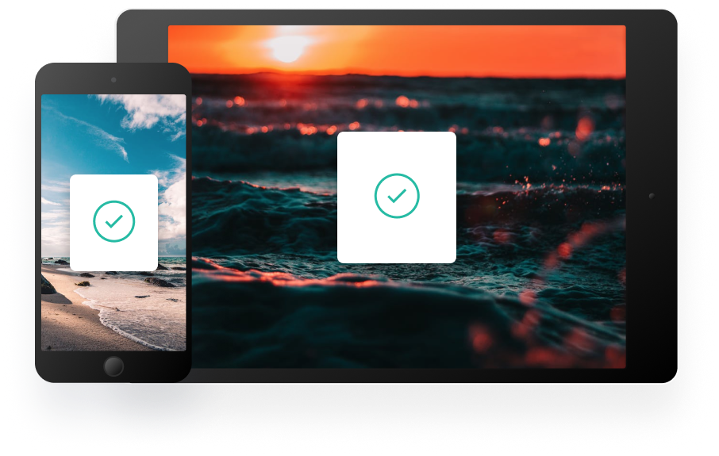
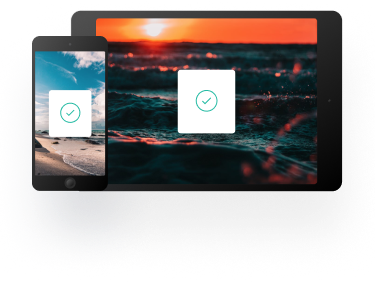

Kopyaladığınız her şeyin geçmişi
Pano, kopyaladığınız her şeyi takip etmenizi ve düzenlemenizi sağlar. Panonuza tüm cihazlarınızdan anında erişin.
Parçacıklarınızın kaydını tutun
Pano, kopyaladığınız her öğeyi anında buluta depolar; bu da, tüm cihazlarınızdan anında parçacığınıza erişebileceğiniz anlamına gelir. Mac ve iOS uygulamalarımız her şeyi düzenlemenize yardımcı olur.
Hızlı Arama
Parçacıklarınızı içerik, kategori, web adresi, uygulama ve daha fazlasına göre kolayca arayın.
iCloud Senkronizasyonu
Tüm cihazlarınızda parçacıkları anında kaydeder ve senkronize eder.
Tam Tarih
Retrieve any snippets from the first moment you started using the app.
Panoya her yerden erişin
İster hareket halinde olun, ister bilgisayarınızda olun, birkaç basit tıklamayla tüm Pano parçacıklarınıza erişebilirsiniz.
 İş akışınızı güçlendirin
Üretkenliğinizi artıracak araçlara sahibiz.
Kara listeler oluşturun
Belirli kaynakları hariç tutarak hassas bilgilerin panonuza asla ulaşmamasını sağlayın.
Düz metin parçacıkları
Tutarlı bir görünüm için kopyalanan metinden istenmeyen biçimlendirmeleri kaldırın.
Gizli önizleme
Panonuzdaki tüm kod parçacıklarının hızlı önizlemesini yaparak kolay erişim sağlayın.
iOS ve Mac OS için Pano
App Store'da ücretsiz olarak mevcuttur. Mac veya iOS için indirin, iCloud ile senkronize edin ve panonuza eklemeye başlayın.